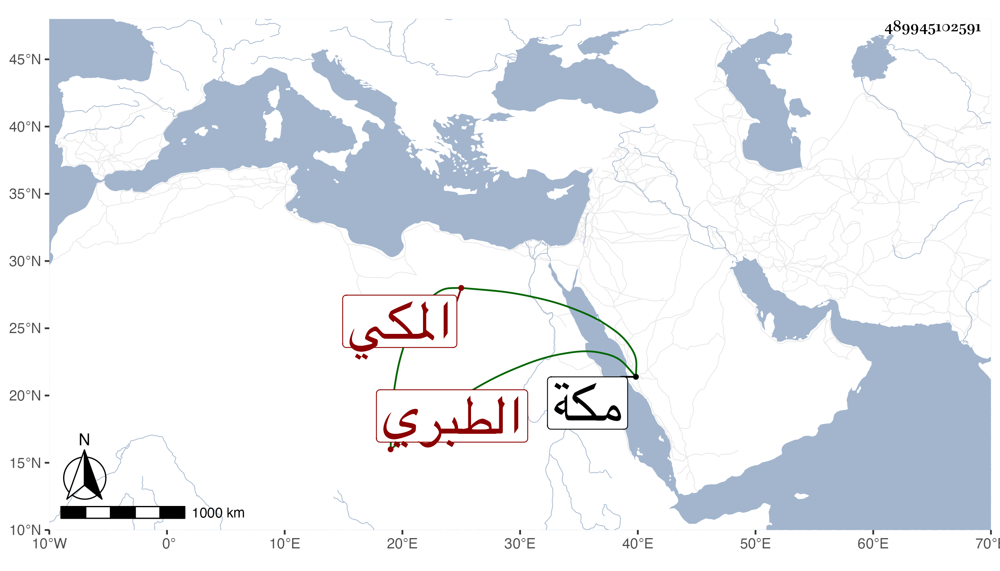

0902Sakhawi.DawLamic.ITO20230111-ara1.EIS1600.489945102591
Biography ID: 489945102591
303
محمد بن عبد الواحد بن الزين محمد بن أحمد بن محمد بن المحب أحمد ابن عبد الله أبو حامد الطبري المكي أمه عائشة المدعوة سعادة ابنة محمد بن فتح الطائفي ولد في سنة سبع وثمانمائة وسمع على جده الزين وفتح الدين المخزومي وابن الجزري والشمس الشامي وابن سلامة وأجاز له المراغي وآخرون . مات بمكة في شعبان سنة سبع وثلاثين .
